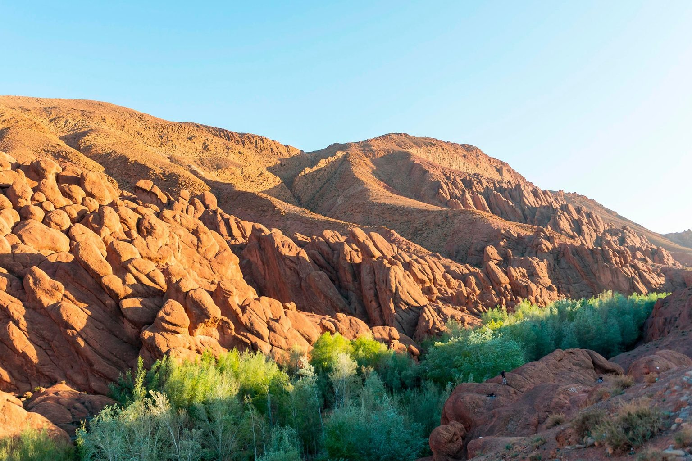
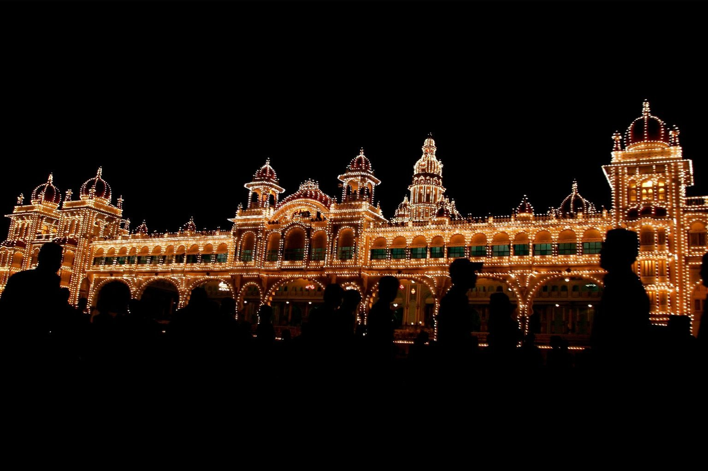
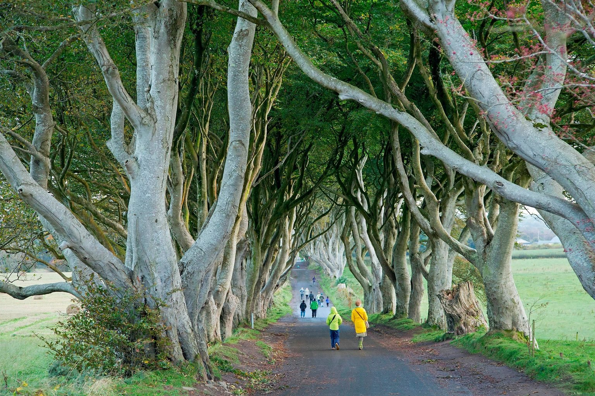
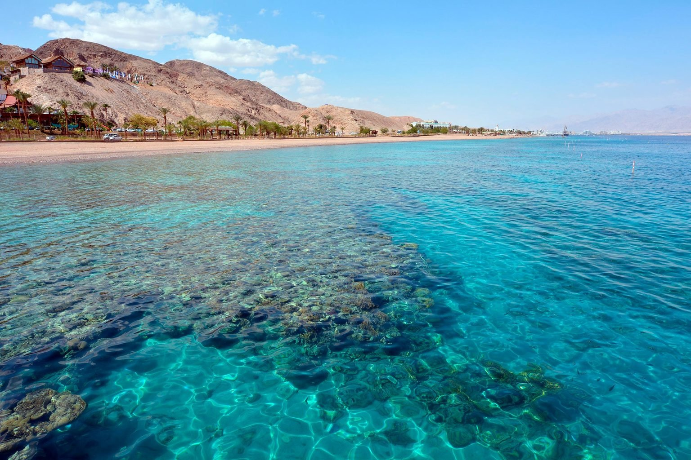
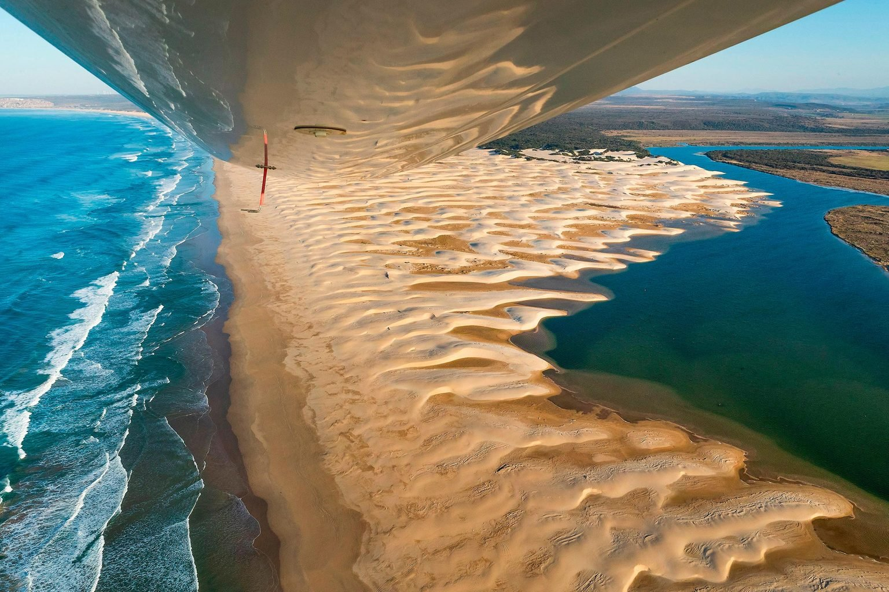
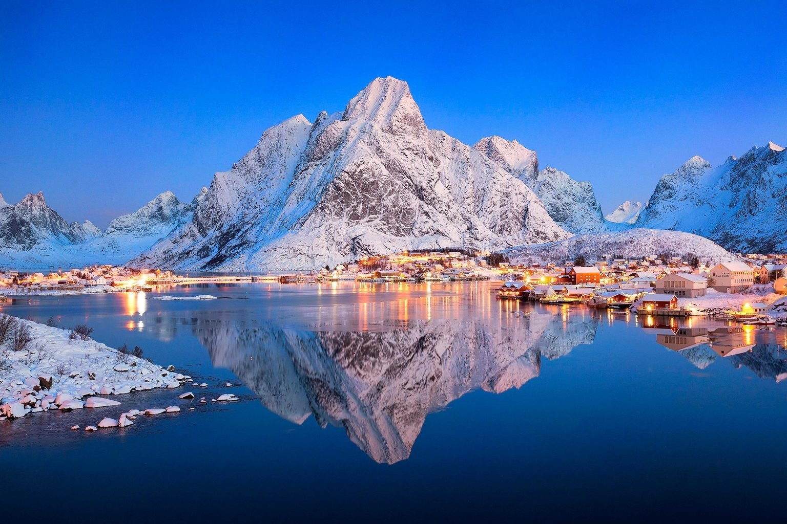
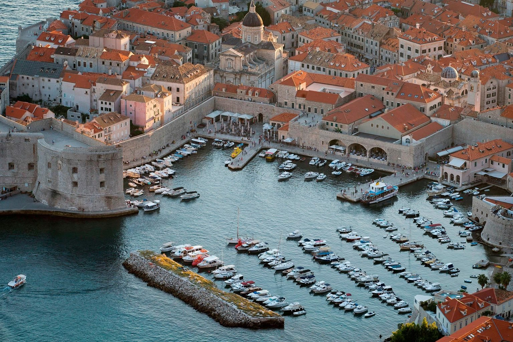
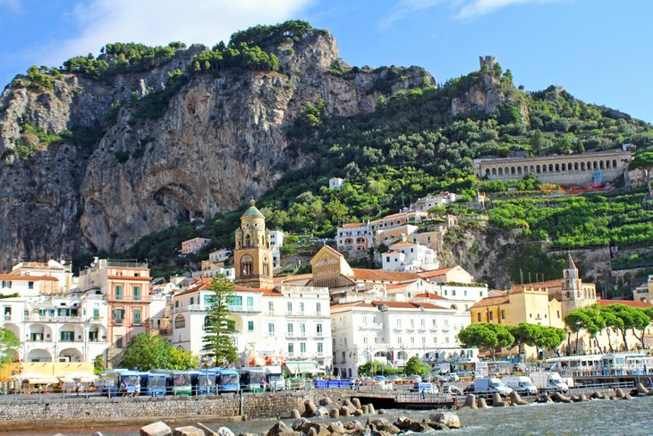
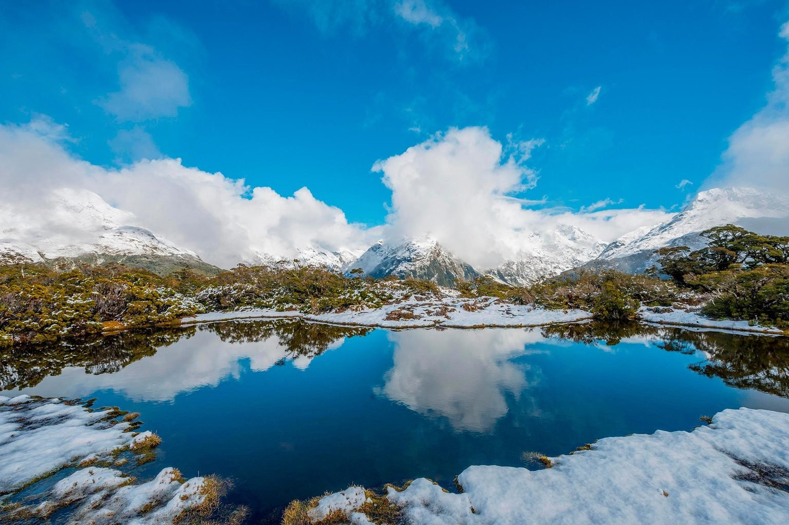
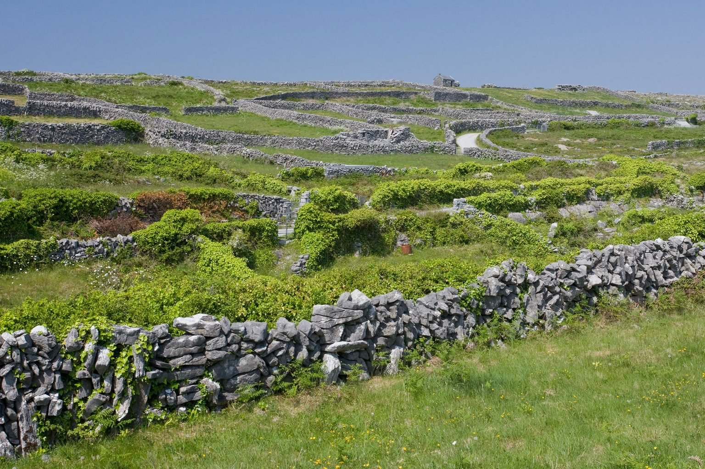

-
china
The Dongchuan Red Land near Kunming, in south China’s Yunnan Province, is praised as “God’s palette” by backpackers and photographers alike. The red colors are due to iron deposits in the soil and are visible year-round, accented in summer with potato flowers and golden wheat...
-

Morocco
Morocco is often associated with its desert views, but it also has breathtaking red rock mountains like the ones pictured here in the Dades Valley. It also boasts magnificent canyons, plus opportunities to rock-climb or raft....
-

India
About 96,000 lamps illuminate Mysore Palace on the last day of the Dusshera Festival in Mysore, India. The Hindu festival celebrates the goddess Durga’s triumph over the demon Mahishasura, a mythological tale of good versus evi.....
-

Northern-Ireland
“Northern Ireland is home to some of the world’s most eerily beautiful wonders,” according to Condé Nast Traveler. And those wonders include the Dark Hedges of County Antrim, pictured here, with people walking down “Tree Avenue” for perspective on the size of the trees. Northern Ireland is one of the countries where you could take gorgeous pictures of trees. These 20 incredible photos of some more of the world’s most beautiful trees are just as pretty....
-

Israel
Extending along the coast of Eilat, the Coral Beach Nature Preserve is one of the most breathtaking coral reefs on the planet. And it’s as spectacular to see from above as it is from within, where divers can observe all manner of underwater flora and fauna...
-

greece
Greece officially the Hellenic Republic is a country in Southeast Europe. It is situated on the southern tip of the Balkans , and is located at the ...
-

South-Africa
Jeffreys Bay, located on the Eastern Cape of South Africa, is one of the top surfing destinations in the world. And where there are surfers, there always seem to be sharks. The view pictured here was taken by a shark surveillance plane. Sharks are v....
-

Norway
Norway, officially the Kingdom of Norway, is a Nordic country in Northern Europe, the mainland territory of which comprises the western and northernmost ...
-

Montenegro
Smaller than Connecticut, this tiny Balkan nation boasts breathtaking beauty and fascinating history (it was once part of Yugoslavia). Pictured here is Dubrovnik’s magnificent harbor, as seen from a hill high above the city. For more postcard-worthy images, check out these perfectly timed nature photos that look fake but aren’t.
-

itly
The Rocca Calascio in Abruzzo is the highest mountaintop fort in all of Italy and one of the oldest—construction commenced by the 10th century. Badly damaged by an earthquake in the 18th century, it has not been restored, but it stands as a beautiful ruin in the Gran Sasso National Park.
-

New-Zealand
The largest national park in New Zealand, Fiordland National Park, is in Southland, the southernmost region in the nation. Much of it looks like this—snowcapped mountains reflected in deep, serene lakes, marked by glaciers. If you’re visiting New Zealand, you might also want to check out the most popular destinations in Australia..
-

Ireland
The Irish countryside unfolds like a dazzling green patchwork quilt. But the hundreds of miles of hand-built limestone walls that cut the farmlands into odd geometrical shapes aren’t just beautiful to behold—they also serve as a fascinating living history of thousands of years of Irish land ownership. This photo was taken in County Clare in the spring of 2012....